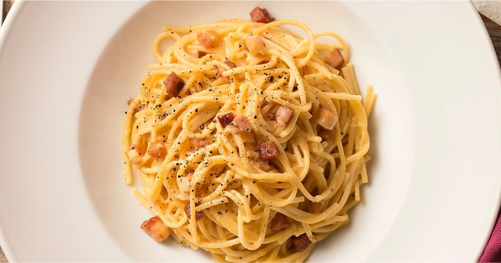
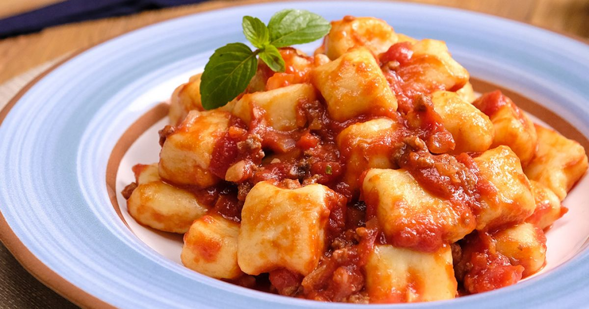

Macarrão à Carbonara
Uma receita clássica e deliciosa de macarrão cremoso com ovos e queijo parmesão.
Ingredientes e modo de preparo:
- 250g de macarrão espaguete
- 100g de pancetta ou bacon
- 2 ovos
- 50g de queijo parmesão ralado
- Sal e pimenta a gosto
- Cozinhe o macarrão em água salgada até ficar al dente.
- Enquanto o macarrão cozinha, frite a pancetta até ficar crocante.
- Em uma tigela, bata os ovos com o queijo parmesão e tempere com sal e pimenta.
- Escorra o macarrão e misture imediatamente com os ovos batidos e a pancetta quente.
- Sirva com mais queijo parmesão e pimenta-do-reino a gosto.

Lasanha de Carne
Camadas de massa, carne moída e queijo derretido, uma combinação irresistível.
Ingredientes e modo de preparo:
- 500g de carne moída
- 1 pacote de massa de lasanha pré-cozida
- 2 xícaras de molho de tomate
- 1 xícara de queijo muçarela ralado
- 1/2 xícara de queijo parmesão ralado
- 1 cebola picada
- 1 dente de alho picado
- Sal e pimenta a gosto
- Refogue a cebola e o alho, adicione a carne moída e cozinhe até dourar.
- Adicione o molho de tomate e tempere com sal e pimenta. Deixe cozinhar por 15 minutos.
- Monte a lasanha em camadas: comece com o molho de carne, depois a massa e o queijo.
- Repita as camadas até terminar os ingredientes, finalizando com queijo parmesão.
- Asse em forno preaquecido a 180°C por 30-40 minutos ou até borbulhar e dourar.

Nhoque de Batata
Uma receita de nhoque caseiro, leve e macio, servido com molho de sua escolha.
Ingredientes e modo de preparo:
- 1kg de batata
- 2 xícaras de farinha de trigo
- 1 ovo
- Sal a gosto
- Molho de tomate a gosto
- Cozinhe as batatas até ficarem macias e depois amasse bem.
- Adicione o ovo, a farinha de trigo e o sal, e misture até formar uma massa homogênea.
- Modele os nhoques e cozinhe em água salgada até que subam à superfície.
- Escorra e sirva com o molho de tomate ou de sua preferência.